항공기관정비기능사 (2006-10-01 기출문제)
1과목: 비행원리
1. 다음 중 테이퍼 비(taper ratio : λ)에 대한 식으로 옳은 것은? (단, Cr:날개뿌리 시위, Ct:날개 끝 시위)
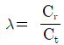
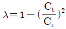
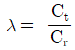
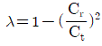
(정답률: 74%)

2. 비행기에서 기수 내림 모멘트가 커질수록 조종력의 역작용은 조종사의 조종에 의한 수정을 어렵게 하기 때문에 이러한 현상을 자동적으로 수정할 수 있도록 보조 장치를 설치하고 있다. 주로 제트 수송기에 설치되어 있는 이 것은 무엇인가?
- 도살 핀(dorsal fin)
- 플랩(flap)
- 마하 트리머(mach trimmer)
- 팬 리버서(fan reverser)
(정답률: 77%)
3. 뒷전 플랩 중 최대 양력 계수의 증가량이 가장 큰 것은?
- 파울러 플랩
- 슬롯 플랩
- 스플릿 플랩
- 단순 플랩
(정답률: 75%)
4. 날개의 시위 길이가 3m, 공기의 흐름 속도가 360km/h, 공기의 동점성 계수가 0.15cm2일 때 레이놀즈수는?(오류 신고가 접수된 문제입니다. 반드시 정답과 해설을 확인하시기 바랍니다.)
- 2×107
- 2×109
- 3×107
- 3×109
(정답률: 28%)
5. 대기권의 구조 중 전리층이라 하며 전파를 흡수, 반사하는 작용을 하여 통신에 영향을 끼치는 곳은?
- 대류권
- 중간권
- 열권
- 극외권
(정답률: 88%)
6. 2조의 주회전 날개를 비행방향에 대하여 앞뒤로 배열시킨 것으로 대형 헬리콥터에 적합하며, 회전날개의 회전방향은 서로 반대인 헬리콥터는?
- 병렬식 회전날개 헬리콥터
- 동축역회전식 회전 헬이콥터
- 직렬식 회전날개 헬리콥터
- 병렬교차 회전날개식 헬리콥터
(정답률: 58%)
7. 종극하중(ultimated load)을 구하는 식으로 옳은 것은?
- 종극하중 = 제한하중 × 안전계수
- 종극하중 = 제한하중 ÷ 안전계수
- 종극하중 = 제한하중 - 안전계수
- 종극하중 = 제한하중 + 안전계수
(정답률: 71%)
8. 비행기의 상승 비행에서 상승률에 대한 설명으로 가장 올바른 것은?
- 여유마력과 이용마력이 같을 때 상승률은 좋아진다.
- 여유마력과 필요마력이 같을 때 상승률은 좋아진다.
- 여유마력이 작을수록 상승률은 좋아진다.
- 여유마력이 클수록 상승률은 좋아진다.
(정답률: 66%)
9. 조종면이 움직이는 방향과 반대 방향으로 작동하도록 기계적으로 연결되어 있는 탭(tab)은?
- 트림 탭
- 평형 탭
- 서보 탭
- 스프링 탭
(정답률: 43%)
10. 공기보다 가벼운 항공기에 속하는 것은?
- 전환식 항공기
- 자이로 다인
- 비행선
- 활공기
(정답률: 62%)
11. 회전익 항공기에서 회전축에 연결된 회전날개 깃이 하나의 수평축에 대해 위 아래로 움직이는 운동은?
- 플래핑 운동
- 리드-래그 운동
- 자동 회전 운동
- 스핀 운동
(정답률: 84%)
12. 이륙거리를 가장 올바르게 설명한 것은?
- 지상 활주거리에다 비행기가 안전한 비행상태의 고도 까지 이륙하는데 소요되는 상승거리를 합한 거리이다.
- 타이어가 움직이기 시작하여 지상에서 떨어질 때 까지의 거리이다.
- 이륙 후 비행기가 수평비행이 이루어질 때 까지의 거리이다.
- 비행기가 활주를 시작하여 기수를 들어올릴 때 까지의 거리이다.
(정답률: 69%)
13. 다음 중 비행기의 정적 세로안정을 좋게하기 위한 설명으로 틀린 것은?
- 무게중심이 날개의 공기 역학적 중심보다 앞에 위치 할수록 좋아진다.
- 날개가 무게 중심보다 높은 위치에 있을 때 좋아진다..
- 꼬리날개 면적을 작게 할 때 좋아진다.
- 꼬리날개 효율이 클수록 좋아진다.
(정답률: 76%)
14. 비행기의 날개골에서 앞전과 뒷전을 연결하는 직선을 무엇이라 하는가?
- 캠버
- 두께
- 시위
- 모멘트
(정답률: 78%)
15. 비행기에 발생하는 항력 중 충격파가 생기는 초음속 흐름에서 발생하는 것은?
- 압력항력
- 마찰항력
- 유도항력
- 조파항력
(정답률: 88%)
16. 항공기가 이륙하기 위하여 바퀴가 지면에서 떨어지는 시간부터 착륙하여 착지하는 순간까지의 시간으로 정비 분야에서 사용하는 시간은?
- 시험비행(test flight)
- 비행시간(flight time)
- 한계시간(time limit)
- 사용시간(time in service)
(정답률: 39%)
17. 다음 ( ) 안에 알맞은 용어는?
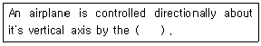
- rudder
- elevator
- ailerons
- flap
(정답률: 66%)
18. 항공기 금속재료에 발생하는 부식 중 입자간 부식에 관한 내용으로 가장 올바른 것은?
- 부식된 부위가 부풀어 오르며, 나뭇결모양이나 섬유조직의 형태로 나타난다.
- 두 금속사이의 접촉면에 부식 퇴적물이 쌓이는 형태로 나타난다.
- 금속재료가 인장응력을 받을 때 내부조직의 변화가 일어나 발생된다.
- 금속표면에 존재하는 수분에 의해 발생된다.
(정답률: 38%)
19. “감항성은 항공기가 비행에 적합한 안전성 및 신뢰성이 있는지의 여부를 말하는 것이다."에서 밑줄 친 감항성을 영어로 올바르게 표시한 것은?
- Maintenance
- Comfortability
- Inspection
- Airworthiness
(정답률: 74%)
20. 다이얼 게이지의 용도로 가장 올바른 것은?
- 원통의 진원 상태 측정
- 원통의 안지름, 바깥지름, 깊이 등을 측정
- 정확한 피치의 나사를 이용하여 실제길이를 측정
- 지시계기의 기준을 설정하고 가공상태를 측정
(정답률: 68%)
2과목: 항공기정비
21. 시한성 부품의 영문약자 표시로 가장 올바른 것은?
- TRP
- TCTC
- IPC
- MPL
(정답률: 74%)
22. 정기적인 점검과 시험을 실시하여 상태가 불량한 부분의 부품을 교환하거나 수리하여 적절한 조치를 취하는 항공기 정비방식은?
- 오버홀
- 컨디션 모니터링
- 하드타임
- 온 - 컨디션
(정답률: 58%)
23. 항공기 급유 및 배유시의 안전사항에 대한 설명 중 틀린 것은?
- 3점 접지는 급유 중 정전기로 인한 화재를 예방하기 위한 것이다.
- 3점 접지란 항공기와 연료차, 항공기와 지면, 연료차와 사람의 접지를 말한다.
- 급유 및 배유 장소로부터 15m 이내에서 흡연이나 인화성 물질을 취급해서는 안된다.
- 반드시 3점 접지를 하고 연료차량은 항공기와 충분한 거리를 유지해야 한다.
(정답률: 83%)
24. 다음은 제트 엔진에 대한 설명이다. 본문의 EGT 약어를 옳게 나타낸 것은?
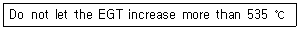
- Engine Gas Temperature
- Exhaust Gas Temperature
- Engine Gas Turbine
- Exhaust Gas Turbine
(정답률: 60%)
25. 다음 중 전기적인 화재는 어느 것인가?
- A급 화재
- B급 화재
- C급 화재
- D급 화재
(정답률: 90%)
26. 항공기를 정비하거나 검사할 때 점검창(access panel)을 신속하고 용이하게 열고 닫을 수 있는 기능을 하는 특수 고정부품은?
- 턴 로크 파스너
- 고전단 리벳
- 고정 볼트
- 조 볼트
(정답률: 67%)
27. 자분탐상검사에서 재료의 보자성(Retentivity) 이란?
- 쉽게 자화되려는 성질
- 부품의 탈자에 소요되는 시간
- 잔류자장을 유지하려는 성질
- 부품에서 자장의 깊이
(정답률: 63%)
28. 사고 방지의 마지막 단계는 시정책의 적용이며 3E를 완성함으로써 이루어진다 라고 하였는데 3E와 관계없는 것은?
- 교육
- 기술
- 숙련
- 규칙
(정답률: 44%)
29. 다음의 안전색채 중에서 장비 및 시설물은 직접 인체에 위험을 주지는 않으나, 주의하지 않으면 사고의 위험이 있다는 것을 작업자에게알려주는 안전색채는?
- 노란색
- 붉은색
- 파란색
- 자주색
(정답률: 85%)
30. 비파괴검사의 종류에 속하지 않는 것은?
- 침투탐상검사
- 현미경조직검사
- 자분탐상검사
- 방사선투과검사
(정답률: 92%)
31. 그림과 같이 토크 렌치와 연장 공구를 이용하여 볼트를 150 inㆍlb로 조이려고 한다. 토크 렌치의 지시 값이 몇 inㆍlb를 지시할 때 까지 조이면 되는가?
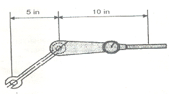
- 80 inㆍlb
- 90 inㆍlb
- 100 inㆍlb
- 110 inㆍlb
(정답률: 71%)
32. 볼트머리(Bolt head)에 R의 기호가 새겨져 있다. 무엇을 의미하는가?
- 정밀공차 볼트
- 내식성 볼트
- 알루미늄합금 볼트
- 열처리 볼트
(정답률: 60%)
33. 수리를 위해 사용되는 리벳의 직경은 무엇에 의해 정해지는가?
- 리벳 작업할 판의 두께
- 리벳 작업할 판의 모양
- 리벳 shank의 길이
- 리벳과 리벳간의 거리
(정답률: 84%)
34. 기체 수리시 판재를 평면 설계할 때, 판재를 정확히 수직으로 구부릴 수 없기 때문에 굽혀지는 부분에 여유 길이를 주는데, 이것을 무엇이라 하는가?
- 최소 굽힘 반지름
- 굽힘 여유
- 세트백
- 스프링백
(정답률: 77%)
35. 다음 중 스냅 링(snap ring)과 같은 종류를 벌려 줄 때 사용하는 공구는?
- Connector plier
- Internal ring plier
- External ring plier
- Combination plier
(정답률: 62%)
36. 가스터빈기관의 배기덕트에 대한 설명으로 가장 올바른 것은?
- 배기노즐은 소음에 관계가 없다.
- 초음속 비행기에서는 수축형 덕트를 사용한다.
- 배기가스의 압력에너지를 속도에너지로 변화시킨다.
- 배기가스에 소용돌이 흐름을 주어 유도 항력을 감소시킨다
(정답률: 64%)
37. 항공기 왕복기관의 크랭크 축에 정적 평형을 주는 것은?
- 주 저널
- 크랭트 핀
- 크랭크 암
- 평형추
(정답률: 71%)
38. 초음속 흡입덕트에서 수축 통로의 가장 중요한 기능은?
- 공기속도를 증가시키고 압력을 감소시킨다.
- 공기속도를 감소시키고 압력을 감소시킨다.
- 공기속도를 증가시키고 압력을 증가시킨다.
- 공기속도를 감소시키고 압력을 증가시킨다.
(정답률: 60%)
39. 가스터빈기관에서 교류 고전압 용량형 점화장치 내부계통에서 블리이더 저항의 주 역할은?
- 블리이더 저항은 정류회로로서 직류로 정류한다.
- 전압이 방전관의 전극간의 갭을 이온화 하는데 돕는다.
- 고압트랜스의 1차 쪽에서 트리거 커패시터로 전류를 흐르게 한다.
- 저장 콘덴서의 전하의 방전이 있은 후 다음 방전을 위해 트리거 콘덴서의 잔류 전하를 방출시키는 역할을 한다.
(정답률: 54%)
40. 압축비가 7인 오토 사이클의 열효율은 약 몇 % 인가? (단, 가스의 비열비는 1.4이다.)
- 45.4
- 50.2
- 54.1
- 60.3
(정답률: 48%)
3과목: 항공기관
41. 터보 제트기관에서 중요한 구조 부분을 3가지로 구분하였을 때 옳은 것은?
- 흡입구, 압축기, 노즐
- 흡입구, 압축기, 연소실
- 압축기, 연소실, 배기관
- 압축기, 연소실, 터빈
(정답률: 65%)
42. 터빈 깃 내부를 중공으로 제작하여 이곳으로 냉각공기를 지나게 함으로서 터빈 깃을 냉각하는 방법은?
- 대류냉각
- 충돌냉각
- 표면냉각
- 증발냉각
(정답률: 83%)
43. 축류형 압축기에서 실속(STALL)방지를 위한 장치가 아닌 것은?
- 다축식 구조
- 가변 스테이터 깃
- 블리이드 밸브
- 가변동익 구조
(정답률: 28%)
44. 가스터빈 기관 중 충동터빈의 반동도는 얼마인가?
- 0
- 1
- 10
- 100
(정답률: 40%)
45. 압축기의 단수(n)가 4이고, 단당 압력비(rs)가 2 일 때 이 압축기의 압력비는 얼마인가?
- 8
- 12
- 16
- 24
(정답률: 40%)
46. 과열시동(Hot start)을 설명한 것으로 옳은 것은?
- 시동 중 r.p.m 이 최대한계를 넘는 현상
- 기관을 비행 중에 재시동하는 현상
- 기관이 냉각되지 않은 채로 시동을 거는 현상
- 시동할 때 배기가스의 온도가 규정된 한계값 이상으로 증가하는 현상
(정답률: 75%)
47. 항공기 왕복기관의 저압 점화계통에서 저전압 전기를 고전압으로 승압시키는 것은?
- 계전기
- 변류기
- 변압기
- 배전기
(정답률: 86%)
48. 실린더의 안지름이 15.5cm, 행정 거리가 0.160m, 실린더수가 6개인 기관의 총 행정 체적은 약 몇 L 인가?
- 14
- 16
- 18
- 20
(정답률: 42%)
49. 왕복기관의 밸브 개폐시기에 사용되는 용어의 약자 중 상사점 전을 표시한 것은?
- BTC
- BDC
- ATC
- ADC
(정답률: 77%)
50. 왕복기관에서 실린더의 압축시험을 할 때 필요한 공기의 압력은 약 몇 psi 인가?
- 60
- 70
- 80
- 90
(정답률: 40%)
51. 다음 중 지시마력에서 마찰마력을 뺀 마력은?
- 제동평균 마력
- 제동마력
- 기계효율 마력
- 평균 유효마력
(정답률: 75%)
52. 항공용 윤활유의 점도 측정에는 어떤 것을 사용하는가?
- 레이드 증기 점도계
- CFR 점도계
- 맴돌이 점도계
- 세이볼트 유니버어설 점도계
(정답률: 49%)
53. 화씨온도(Tf)를 섭씨온도(Tc)로 변환하는 식으로 올바른 것은?
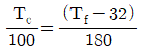
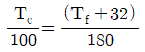
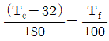
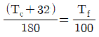
(정답률: 44%)
54. 가스터빈기관에서 종이로 되어 있는 연료 여과기는?
- 디스크형
- 카트리지형
- 스크린형
- 스크린-디스크형
(정답률: 77%)
55. 가스터빈 기관의 연료계통에서 연료 노즐 분사각도를 가장 올바르게 설명한 것은?
- 1차 연료보다 2차 연료 분사각도가 더 넓게 분사된다.
- 각도는 1차와 2차가 같고 압력은 2차 연료가 높다.
- 1차 연료보다 2차 연료 분사 온도가 높아 균등한 연소를 이룬다.
- 1차 연료 분사각도는 2차 연료보다 더 넓게 분사된다.
(정답률: 44%)
56. 왕복기관의 직접 연료분사장치(direct fuel injection system)의 장점이 아닌 것은?
- 비행자세에 의한 영향을 받지 않는다.
- 흡입계통 내에는 공기만 존재하므로 역화 의 우려가 없다.
- 플로트식 기화기에 비하여 구조가 간단하다.
- 연료의 기화기 실린더 안에서 이루어지기 때문에 결빙의 위험이 거의 없다.
(정답률: 58%)
57. 다음 가스터빈기관의 연소실 형식 중에서 정비하는데 가장 용이한 것은?
- 캔형
- 애뉼러형
- 베인형
- 캔-애뉼러형
(정답률: 66%)
58. 왕복기관에서 실린더 내의 왕복운동을 크랭크 축의 회전운동으로 바꾸어 주는 매개체 역할을 하는 것은?
- 너클 핀
- 캠 플레이트
- 피스톤 핀
- 커넥팅 로드
(정답률: 82%)
59. 배기밸브(exhaust valve)의 밸브스템(valvestem)의 중공(hollow) 내부에 넣는 금속나트륨 (metallic sodium)의 주역할은?
- 밸브의 파손을 방지한다.
- 배기밸브의 온도를 일정하게 유지하게 한다.
- 배기밸브의 냉각을 돕는다.
- 배기밸브를 가열시켜 출력을 증가시킨다.
(정답률: 56%)
60. 가스터빈 기관의 연료-윤활유 냉각기의 가장 중요한 역할은 무엇인가?
- 오일과 연료를 냉각한다.
- 오일은 차게 하고 연료는 따뜻하게 한다.
- 연료는 차게 하고 오일은 따뜻하게 한다.
- 연료와 오일을 증기화 시켜 냉각한다.
(정답률: 73%)